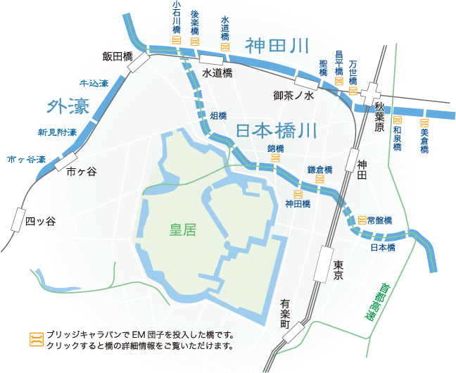
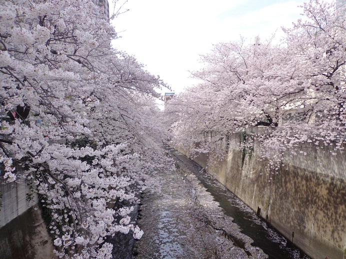
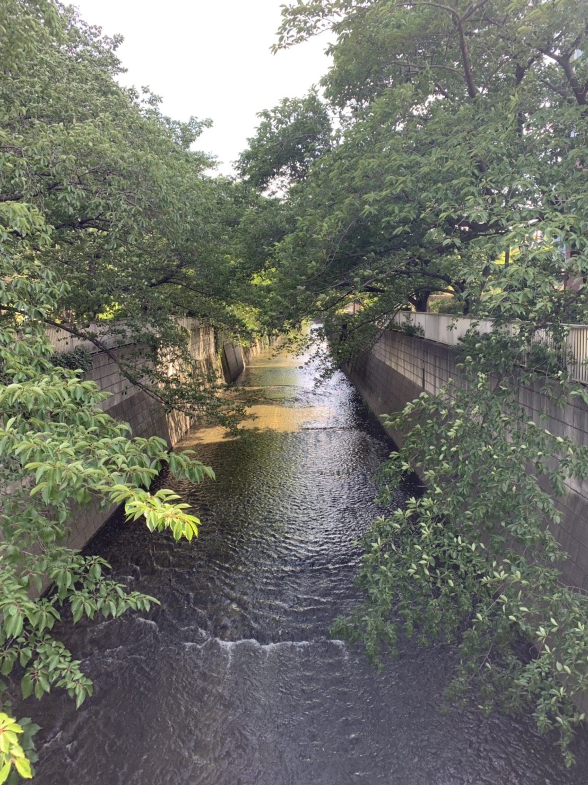
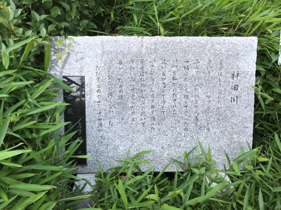

～どこから流れてるの？～

神田川は東京都三鷹市から流れ、隅田川に合流する。
全長25.3km、流域面積105.0?と、東京都内における中小河川としては最大規模である。
江戸時代は「神田御用上水」と呼ばれていた。
神田上水は、1898年（明治31年）に
近代水道設備ができるまで、
江戸・東京に飲み水を供給していた。1964年（昭和39年）の河川法改正以降は、源流から隅田川に至るまで一貫して「神田川」と呼ばれるようになった。
高度経済成長期に生活排水の流入により水質が悪化し「死の川」と呼ばれたが、周辺部に落合水再生センターなどの下水道網、下水道処理施設の整備が進み、元々湧水が多いことなどから近年は水質が以前に比べると大幅に改善し、鯉や鮎、鮒などが生息するようになった
（wikipediaより）
～神田川 名所～

桜の時期は満開の桜道！
江戸川橋駅から早稲田方面（高田馬場）に約続く桜並木２km
明治時代に植えられた桜らしい・・・
神田川沿いでここ数年、人気が高まってるのが東中野。
周りを住宅街に囲まれているので落ち着いた雰囲気でお花見ができる。
遊歩道も比較的広くベンチもたくさんあったり、シートを広げたりして宴会なんかもいいかも！
JRの線路と交差するポイントがあり、電車が通るタイミングで写真を撮るのもオススメ！

↑現在の東中野 ↑五十嵐 作
～豆知識～

桜が川沿いに多く咲いている理由は、多くの花見客が桜並木を歩くことで、自然と土手が踏み固められる。そうして、大雨に負けない土壌を作るため、昔の人々は川沿いに桜を植えていたのだとか・・・
春に限らず散歩道に最適。
大久保通りを東に進むと末広橋(東中野駅から徒歩10分くらい)があり、遊歩道横の公園に1970年代の名曲「神田川」（作詞：喜多條忠）の歌詞碑がある。
ぜひ探してみてね。